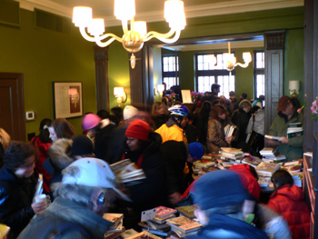
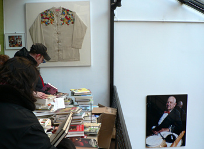
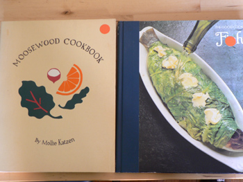

James Beard tag sale
I went to the James Beard Foundation tag sale this morning at 10:15, and it was already packed, with a short line of people waiting to get in. I waited about ten minutes, and this was the scene upstairs:

There you see hundreds of people scrambling for cookbooks. Upon entering, I heard someone scream “Oh my god, please move!” The staff organized the sale as well as they could have, with tables of books scattered around two large rooms. There were $10 tables, $5 tables, and priced-as-marked tables. You were lucky to even get up to a table, though, because the little old ladies and queens were digging in and buying unbelievable quantities of books. What are 70-year-olds doing with full boxes of used cookbooks? I kept thinking, that guy will be dead before he gets through even half of those books. But bargain-shoppers are insatiable, and fantastic deals abounded.
This wasn’t exactly my scene, but I tolerated it for twenty minutes just for the privilege of being in the famous house. Beard memorabilia was everywhere. Check out his huge kimono, near a portrait of the substantial man himself:

Downstairs, in this atrium area, were a few tables covered with dishes, mugs, $3 All-Clad fish turners, and pineapple earrings. I wish I could have had just 10 minutes in there by myself, but even in the melee I was able to find a few books on one of the $5 tables.

On the left is the Moosewood Cookbook, which, although vegetarian, is beautiful and probably full of worthwhile recipes. I’ve always loved the zuccanoes, and it looks like there are a lot of good breads and cakes. On the right is the fish cookbook from the Time Life Good Cook series, edited by Richard Olney. A cookbook expert I once knew told me to buy these out-of-print gems whenever I saw them, and now I have my first one.
Comments
I really like the photo on the cookbook on the right. :)
Add a comment